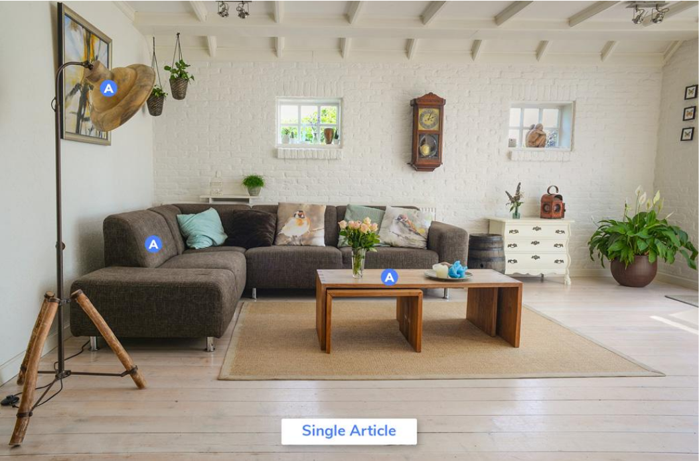
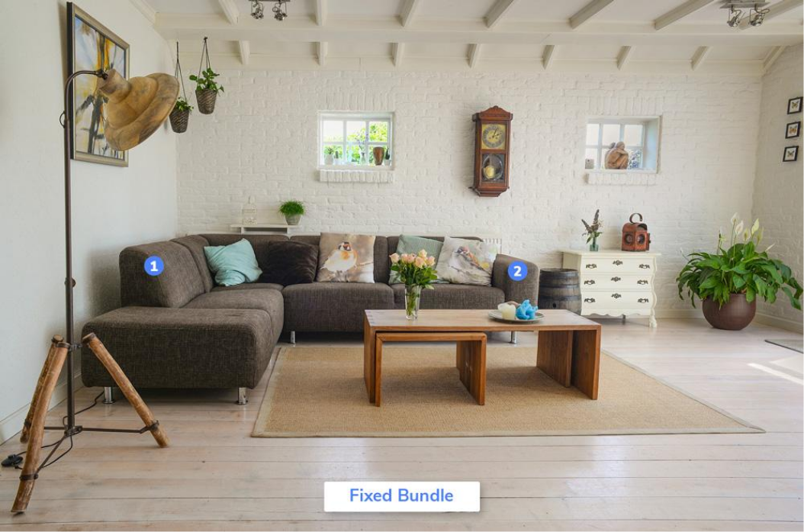

Implementation Guide¶
This page will help you, a Contentserv user to understand the basic concepts surrounding a product. After reading through the content of this page, you should be able to define what a product is as it pertains to Contentserv and the various types that you can set up in the system.
What is a Product?¶
Products are merchandise offered to a market by a supplier to satisfy a need or demand. A product is manufactured through a process and provides benefit to its intended market. A chair, a table, and a ‘set of furniture’ for the dining room are examples of products. Similarly, a product can also be an idea or a service.
In the Contentserv Global System, a product can be a placeholder for a group of items of the same model or a stand-alone item up for sale. Here, you can create a product, enrich it with relevant images, videos and classify it according to its specific details.
What are the various types of Products in Contentserv?¶
To give our customers the liberty of displaying the products in the most attractive manner that will also aid with their promotional activities, we have introduced various types of products, a detailed account of same is described in the following section.
Each type of product has a unique set of values/attributes that can be assigned to it. Having various types of products enhances its use and makes it more relevant for the market. Say, a Chair is a good stand-alone product to sell, but a Dining Table usually sells and comes with chairs.
Here is a list of the types of products that can be set up in the system:
- Single Article
- Bundle
- Fixed Bundle
- Set of products
- Promotional Collections
- PID
- Unit
- Standard Identifier
Single Article¶
A Single Article is a stand-alone sellable item. This product type is usually used to create independent products.
Example:
Dog Bed.

Also, a single article can be a chair, a table lamp, a mattress and so on.
These Single Articles can be sold individually or grouped together to make a bundle.
Example:
Furnishing items like chair, table, sofa, table lamp are individual items for sale; when put together in a bundle, they form a ‘living room set’.
And that introduces you to the next product type- Bundle.
Bundle¶
A bundle is a collection of items put together by the retailer for sale. In Contentserv, a user (authorized person to use the system) can create two types of bundles: (1) Fixed Bundle and (2) Threshold (or Loose) Bundle.
Ready to create a Product?¶
Once the concept of a product (and its types) is clear, you may visit the Create a New Product page to learn about the steps in creating a product in Contentserv.